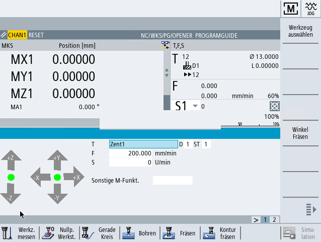

"Manuelle Maschine" bietet für den Handbetrieb ein geändertes, umfangreiches Spektrum an Funktionen. Sie haben die Möglichkeit, alle wichtigen Bearbeitungen auszuführen, ohne ein Programm zu schreiben.
| | Software-Optionen Für das Arbeiten mit "Manuelle Maschine" benötigen Sie die Option "ShopTurn/ShopMill". |
| | Maschinenhersteller Beachten Sie hierzu bitte die Angaben des Maschinenherstellers. |
Grundbild
Nach dem Hochlauf der Steuerung erscheint folgendes Grundbild:
Bearbeitungsmöglichkeiten
Sie haben folgende Möglichkeiten, die Werkstücke zu bearbeiten:
Handbetrieb
Einzelzyklusbearbeitung